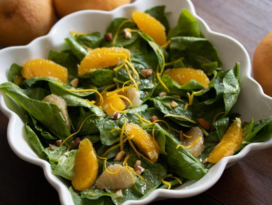

Awesome Recipes
Chantilli Mascarpone
Combined here are my two favorite ingredients, mascarpone, and
chantilly giving us a super easy, 5 minutes only, utterly
delicious Chantilly Mascarpone that you can add any fruit to
dessert.

Spinach Salad With Citrus
Spinach Salad with Citrus. This salad blends the best of summer
ingredients for a fresh salad and puts to great use grapefruits
and oranges.
Zucchini Provolone Pasta
Zucchini Provolone Pasta. Summer bounty is in our fresh
vegetables and fruits which are gracing our grocery stores and
fresh farmers’ markets.